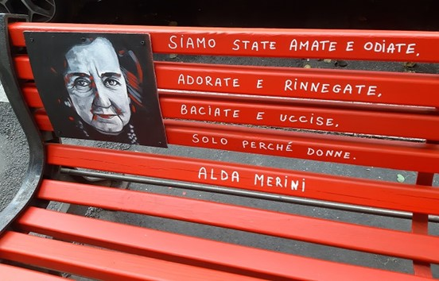

LA VIOLENZA SULLE DONNE
NELLA SOCIETA' CONTEMPORANEA
31,5% 


Nel 2020, a causa del lock-down, il problema della violenza di genere è diventato via via sempre maggiore.
Perciò ho voluto creare questo progetto, per poter capire meglio la reale gravità di questo problema, molte volte sottovalutato e sminuito.
In Italia il 31.5% delle donne
ha subito violenza sessuale o fisica nella sua vita
Quello che nessuno ha detto è che la violenza sulle donne è un fatto quotidiano, comune, di massa.
Dacia Maraini, La violenza contro le donne, “Paese Sera”, 11.10.1975
 La violenza contro le donne viene definita fatto sociale che necessita di interventi mirati in termini di politiche pubbliche solo verso la fine degli anni 70. Saranno infatti i movimenti femministi a trasformare questo fenomeno da privato a pubblico, mettendo in luce la gerarchia sociale e il controllo dell’uomo sulla figura femminile.
Nel 1976 a Bruxelles venne istituito un “tribunale dei crimi commessi contro le donne” con lo scopo di difendere le vittime rendendo a loro giustizia e sensibilizzare la società.
Verso gli anni 80 questo fenomeno viene esaminato anche dalle Nazioni Unite che lo definiranno come “qualsiasi atto di violenza di genere che provoca o possa provocare danni fisici, sessuali o psicologici alle donne, incluse le minacce di tali atti, la coercizione o la privazione arbitraria della libertà sia che si verifichi nella vita pubblica o privata”.
"descrizione grafico"
TESTO DI PROVA:
Osservando il grafico notiamo che la fascia di età più colpita è quella dai 25 ai 54 anni, questo dimostra quanto il fenomeno sia esteso e complesso.
Allo stesso tempo è presente una forte incidenza anche sulle donne di giovane età, a partire dai 16 anni. Il senso di solitudine e la paura di non essere comprese di queste adolescenti portano al silenzio, e tutto ciò spesso assume la sembianza di quello che dovrebbe essere il loro primo amore.
INTRODUZIONE ALLA CARTINA.... WIP
La Regione con la percentuale più alta è il Lazio, pari al 39.2%. Per questo motivo si è reso necessario l’inserimento della Legge regionale n.4 del 19 marzo 2014: “Riordino delle disposizioni per contrastare la violenza contro le donne in quanto basata sul genere e per la promozione di una cultura del rispetto dei diritti umani fondamentali e delle differenze tra uomo e donna.”
La Basilicata ha un’incidenza del fenomeno del 23.7%, una percentuale più bassa rispetto alle altre Regioni, ma nonostante questo i dati rimangono allarmanti,
mediamente 1 donna su 3 subisce violenza mostrando un fallimento dell’intera comunità nazionale.
CONCLUSIONI: Questo progetto ecc
Tutti i dati sono stati forniti dall'ISTAT
Credits
Progetto creato nel 2021 nell'ambito del contest "Data Driven" organizzato da Camplus College
Realizzato da Matteo Matassoni